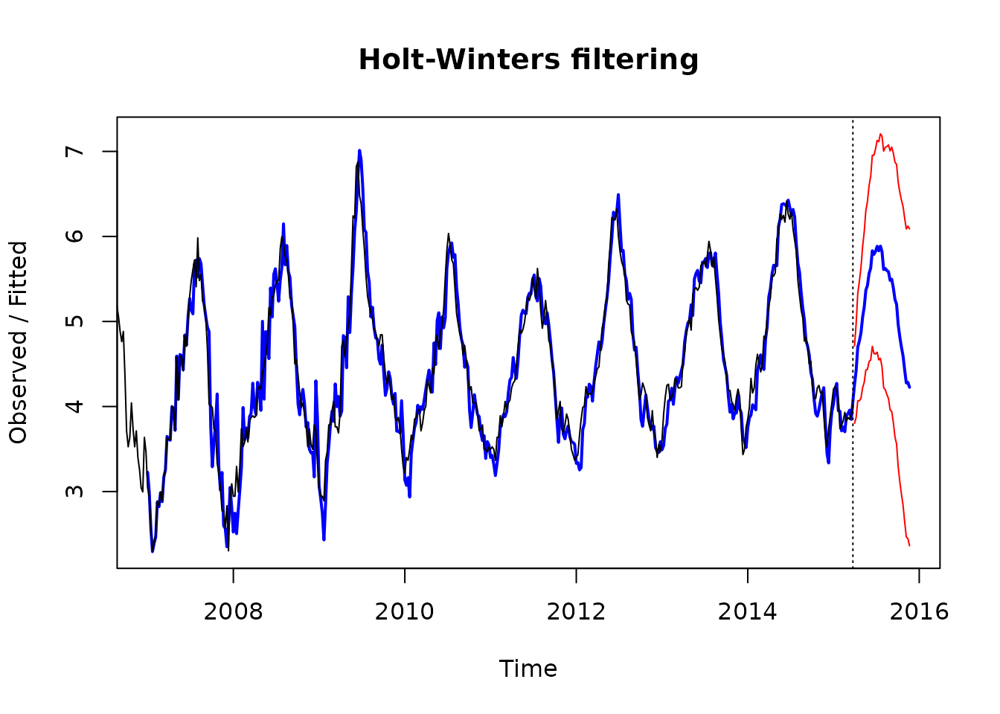

Case Study 17.2: Additional Time Series Case Study B: Google Influenza Searches Data
Source:vignettes/articles/CS17_2.Rmd
CS17_2.RmdEach year, hundreds of New Zealanders get infected with the influenza virus. As such, records are kept on the number of influenza cases by the NZ Crown Research Agency ESR. The trouble with this measure is that it takes weeks to collate and an outbreak can be happening while this is under way. So, is there a quicker way to identify whether an outbreak of influenza is imminent? That is, we would like a proxy ‘quick’ measure, which is on occasion inaccurate, as a substitute for the slow but accurate National surveillance measure. Google Flu trends is an attempt to do this.
This is from the Google website:
Each week, millions of users around the world search for health information online. As you might expect, there are more flu-related searches during flu season, more allergy-related searches during allergy season, and more sunburn-related searches during the summer. You can explore all of these phenomena using Google Insights for Search. But can search query trends provide the basis for an accurate, reliable model of real-world phenomena?
We have found a close relationship between how many people search for flu-related topics and how many people actually have flu symptoms. Of course, not every person who searches for ``flu’’ is actually sick, but a pattern emerges when all the flu-related search queries are added together. We compared our query counts with traditional flu surveillance systems and found that many search queries tend to be popular exactly when flu season is happening. By counting how often we see these search queries, we can estimate how much flu is circulating in different countries and regions around the world.
The following data was obtained courtesy of: Google Flu Trends
(https://www.stat.berkeley.edu/users/statlabs/labs.html).
The variables measured were:
| Variable | Description |
|---|---|
Total |
the total weekly count of Google searches in NZ about influenza |
week |
the calendar week in which the query was made (weeks 1–53) |
Note: Week 53 has been standardised as it is an incomplete week.
flu.ts <- ts(influenza.df$Total, start = 2006, frequency = 53)
plot(flu.ts, main = "Influenza Google Searches (2006-2015)")
abline(v = 2006:2016, lty = 2)
log.flu.ts <- ts(log(influenza.df$Total), start = 2006, frequency = 53)
plot(log.flu.ts, main = "Influenza Google Searches (2006-2015)")
abline(v = 2006:2016, lty = 2)
log.flu.hw <- HoltWinters(log.flu.ts)
log.flu.pred = predict(log.flu.hw, n.ahead = 35, prediction.interval = "True")
plot(log.flu.hw, log.flu.pred, col.predicted = "blue", col.interval = "red", lwd = 2)
Solution
Here we see that there is an increasing seasonal effect with time as the trend increases so we will log this data so that the seasonal effect is roughly the same for each year. That is - we will have an additive model on the logged scale.
Question
Briefly describe all times series components that you observe in this analysis. Include any extreme observations that may have occurred.
Solution
In terms of logged data we see a general increasing linear trend between 2007 and 2014, marked seasonal effects - with peaks in the middle of the year (winter), and time series (autocorrelation) structure in the remainder terms. The winter of 2009 appeared to have markedly more influenza mentions after adjusting it for trend/seasonality. There is no reason to believe there is any underlying cycle in these data.
Solution
Winter depresses immune systems so influenza cases rises. Conversely, summer has the opposite effect.